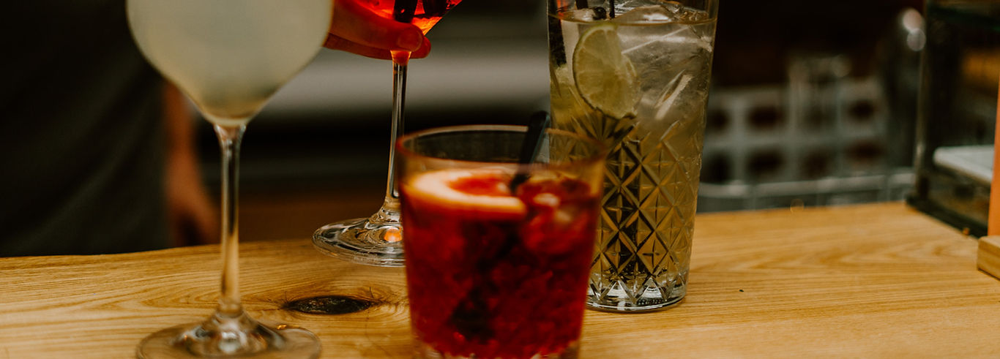
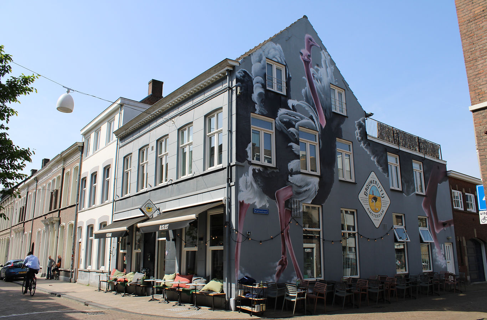
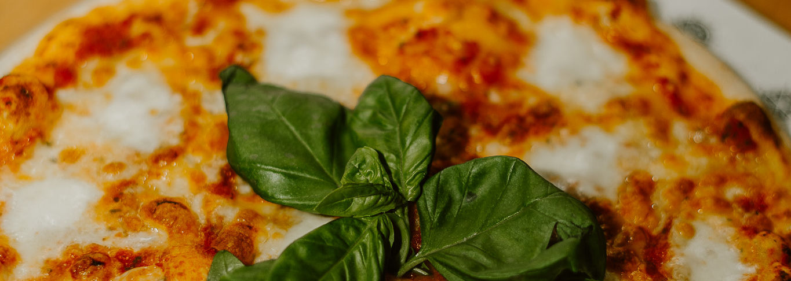
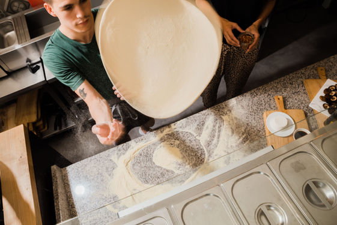
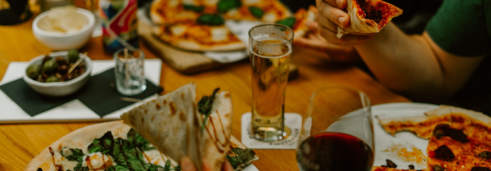
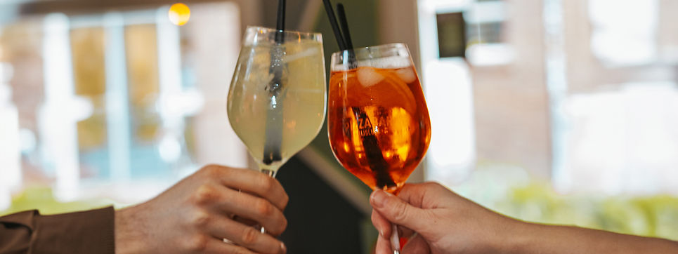
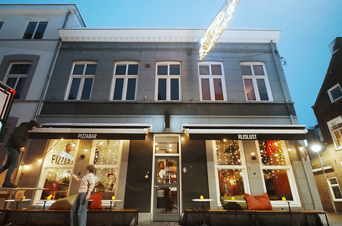

Elke donderdag vanaf 20:30
Italian Cocktail Night
Aan de Willem II-straat: Italiaanse cocktails voor € 5,50, met elke week een special cocktail.

Willem II-straat 5, Tilburg
Deeg dat 48 uur mag rijzen, rijpen en rusten. In 2 minuten dun en krokant uit de Italiaanse steenoven.
Vandaag
Restaurant 16:30 - 22:30
Bezorging 16:30 - 21:00
Zo veel te zien, te ontdekken, te proeven, mensen te ontmoeten en verhalen te delen. Wat is reizen toch heerlijk!
Bij Pizzabar Rijslust vind je een mix van de Italiaanse keuken, gecombineerd met pure ingrediënten uit alle windstreken van de wereld.
Iedere dag starten we met het draaien van ons eigen deeg naar Italiaans traditioneel recept. Naast liefde geven we ons deeg ook 48 uur de tijd om te rijzen, te rijpen en te rusten. Wij bakken onze pizza's in een karakteristieke Italiaanse steenoven, in 2 minuten dun krokant en vol van smaak.
Kun je niet kiezen? Geen probleem. Onze gerechten zijn er om te delen, daar houden we zelf namelijk ook van.
Buon appetito!



We organiseren ook leuke evenementen bij Rijslust: Italian Cocktail Night, Secret stash night, Halloween diner, Spritz Friday, iedere maand een special pizza en nog veel meer. Houd Instagram in de gaten voor de agenda.

Elke donderdag vanaf 20:30
Aan de Willem II-straat: Italiaanse cocktails voor € 5,50, met elke week een special cocktail.

Elke vrijdag vanaf 21:00
Spritz voor € 5,50 per stuk, met keuze uit 4 smaken. Heerlijk met een hapje erbij.
Aan tafel in het restaurant aan de Willem II-straat, of thuis: onze bezorglocatie zit aan de Schouwburgring.
Willem II-straat 5
5038 BA Tilburg
| Dag | Open | Keuken tot |
|---|---|---|
| Maandag | 16:30 - 22:30 | 21:30 |
| Dinsdag | 16:30 - 22:30 | 21:30 |
| Woensdag | 12:00 - 22:30 | 21:30 |
| Donderdag | 12:00 - 00:00 | 22:00 |
| Vrijdag | 12:00 - 00:00 | 22:00 |
| Zaterdag | 12:00 - 00:00 | 22:00 |
| Zondag | 12:00 - 22:30 | 21:30 |
Schouwburgring 153
5038 TW Tilburg
| Dag | Bezorging |
|---|---|
| Maandag | 16:30 - 21:00 |
| Dinsdag | 16:30 - 21:00 |
| Woensdag | 16:30 - 21:00 |
| Donderdag | 16:30 - 21:00 |
| Vrijdag | 16:30 - 21:00 |
| Zaterdag | 16:00 - 21:00 |
| Zondag | 15:30 - 21:00 |
Zin in pizza thuis? Bestel bij onze bezorglocatie.

Voor het restaurant en de bezorglocatie zoeken we nieuwe collega's.
Nieuwe collega's voor de keuken. Je bent een aanpakker, houdt van gezelligheid en samenwerken. Ervaring is mooi meegenomen, maar motivatie en een goede instelling vinden we belangrijker.
Enthousiaste fietsbezorgers die Tilburg kennen, graag actief zijn en mensen blij maken met pizza's.
Interesse? Stuur een appje naar 06 17 14 28 51 of mail naar info@pizza-bar.nl.